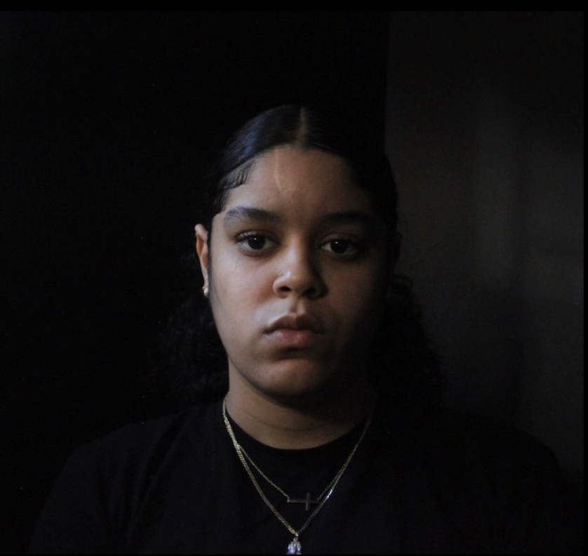

My name is Chantal Gomez. I am a Pursuit fellow with experience in graphic design. My journey into software engineering began when my web design 101 class required me to make my own professional website. It opened a whole new world I didn't know was there. A career advisor suggested I take some coding so I decided to take the leap. My skills include correctly communicating ideas and messages through visual concepts. With my coding journey I currently know algorithms with javascript and html with css for front end and back end developing. Given my passion for design and problem solving I stay eager to satisfy my needs for creating functional easy to use beautiful websites. I am currently working to understand the general topic of api and how I can use it to my advantage when creating websites and personal projects to build for my portfolio.
